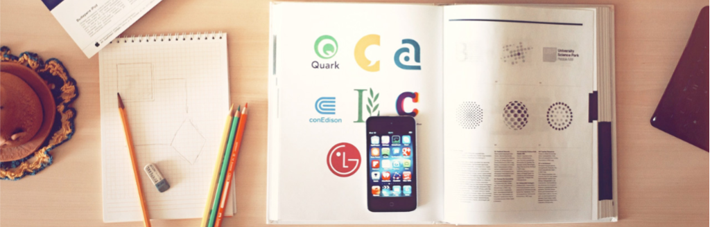

You Must Know When Starting Out in iOS Development
Mobile Developer လုပ်ဖို့စိတ်ကူးရှိသလား ၊ ဒါမှမဟုတ် လက်ရှိ Mobile Developer လုပ်နေလား။

Mobile Developer လုပ်ဖို့စိတ်ကူးရှိသလား ၊ ဒါမှမဟုတ် လက်ရှိ Mobile Developer လုပ်နေလား။ ဒါဆိုရင်တော့ အခု ကျွန်တော် ဖော်ပြမဲ့ အချက်တွေ အနည်းနဲ့အများ သိသားသင့်ပါတယ်။
Mobile Developer လုပ်တော့မယ်ဆိုရင် ၊ ဒါမှမဟုတ် Mobile Phone တွေအတွက် App ရေးတော့မယ်ဆိုရင် ပထမဦးဆုံးအနေနဲ့ စဉ်းစားရမှာက ကိုယ် ဘယ် Mobile Platform အတွက် App ရေးချင်သလဲဆိုတဲ့အချက်ပါ။ Mobile Platform မှာ လက်ရှိ အောင်မြင်နေတဲ့ Platform တွေဆိုရင်တော့ iOS , Android ,Windows Phone , Blackberry OS တို့ဖြစ်ပါတယ်။ Mobile Platform အသီးသီးမှာ မတူညီတဲ့ App Store တွေရှိကြပါတယ်။ အဲ့ဒီ Platform တွေထဲက ကိုယ်စိတ်ဝင်စားတဲ့ ၊ ကိုယ်နဲ့ကြိုက်ညီမဲ့ Platform ကိုရွေးချယ်ပြီး Mobile App တွေရေးသင့်ပါတယ်။ ကိုယ်ရေးလိုက်မဲ့ App ဟာ ဘယ်လိုလူတွေအတွက် ၊ ဘယ်သူတွေသုံးနိုင်မလဲ ၊ ဘယ် App မှာတင်မလဲ စသဖြင့် စဉ်းစားဆုံးဖြတ်သင့်ပါတယ်။
Mobile Developer အချို့ဟာ Mobile App တွေရေးလိုက်မယ်ဆိုရင် ဒါမှမဟုတ် Mobile Developer လုပ်မယ်ဆိုရင် သူတို့အတွက် ချက်ချင်းလက်ငင်း ချမ်းသာကြီးပွားသွားနိုင်တယ်လို့မျှော်လင့်နေကြပါတယ်။ဒါဟာ တကယ်ကို မလွယ်ကူတဲ့ အချက်ပါ။ ဒါပေမဲ့ အောင်မြင်သွားခဲ့တဲ့ လူတွေရဲ့ Success Story ကိုကြည့်မယ်ဆိုရင်တော့ Canadian Developer Matt Rix ဟာ Mobile Developer လုပ်ပြီး လပိုင်းအတွင်းမှာ သူဖန်တီးရေးသားခဲ့တဲ့ Game တစ်ခုဖြစ်တဲ့ Trainyard Game ဟာ အောင်မြင် ကျော်ကြားခဲ့ပါတယ်။ Angry Birds Game ကိုရေးသားခဲ့တဲ့ Rovio Studio ဆိုရင်လည်း အစပိုင်းမှာ ထုတ်လုပ်ခဲ့တဲ့ Game တွေ App တွေမနည်းပါဘူး။ သူတို့ အောင်မြင်ခဲ့သလား ဆိုတော့ ထင်သလောက် မအောင်မြင်ခဲ့ကြပါဘူး။ ဒါပေမဲ့ ဆက်လက်ကြိုးစားရင်းနဲ့ နောက်ဆုံး Angry Birds Game အရောက်မှာတော့ သူတို့ရဲ့ ကြိုးစား မှုဟာ အောင်မြင်ပြီး ဒိတ်ဒိတ်ကြဲ အရာထင်ခဲ့ပါတယ်။ ဒါကြောင့် Mobile App ရေးရင် ချက်ခြင်း လက်ငင်း ထ ချမ်းသာနိုင်တယ်ဆိုတာက ကိုယ့်ရဲ့ ကြိုးစားအားထုတ်မှုအပြင် မိမိ ရဲ့ ကံ နဲ့လည်း သက်ဆိုင်ပါတယ်။ မြောက်များစွာသော Mobile App တွေဟာ Mobile Platform အသီးသီး ရဲ့ App Store တွေမှာ ကိုယ့်ထက် အရင်စောပြီး တည်ရှိနေပါတယ်။ဒီအချက်ကို ကျွန်တော်တို့ ထည့်တွက်ရမှာဖြစ်ပါတယ်။ မဖြစ်နိုင်ဘူးဆိုပြီးတော့ စိတ်ဓာတ်တော့ ကျမသွားပါနဲ့ ။ ကိုယ့်ရဲ့ကြိုးစားအားထုတ်မှုနဲ့ ကံဟာ သူများနဲ့ မတူနိုင်တဲ့အတွက်ကြောင့် Mobile Developer လုပ်ပြီး ချမ်းသာနိုင်ပါတယ်။
Mobile Platform အသီးသီး အတွက် HIG လို့ခေါ်တဲ့ (Human Interface Guidelines) တွေရှိပါတယ်။ Mobile Platform တွေကွဲပြားသလို သူတို့အတွက် ချမှတ်ထားတဲ့ HIG တွေဟာလည်း တူညီမှာမဟုတ်ပါဘူး။ ဥပမာ အနေနဲ့ပြောရမယ်ဆိုရင် iOS Platform မှာ User အများစုအနေနဲ့ Back Button ဆိုရင် ဘယ်ဘက်အပေါ်ဆုံးကို သတိရကြပါတယ်။ ဒါကြောင့် Back Button တွေကို ထည့်မယ်ဆိုရင် အတတ်နိုင်ဆုံး ဘယ်ဘက် အပေါ်ဆုံးမှာ ထည့်သွင်းသင့်ပါတယ်။ Android မှာတော့ အများစုဟာ Hardware Back Button ထည့်သွင်းထားလေ့ရှိပါတယ်။ Mobile App တစ်ခုဖန်တီးတော့မယ်ဆိုရင် သူတို့ ချမှတ်ထားတဲ့ HIG ကိုသေချာလေ့လာဖတ်ရှုသင့်ပါတယ်။ HIG ဆိုတဲ့အတိုင်းပါပဲ Guidelines တွေကိုညွှန်ပြပေးထားတာပါ။ Rules စည်းမျဉ်းစည်းကမ်းတွေ မဟုတ်ပါဘူး။ အဲ့ဒါကြောင့် ဖတ်ရှုလေ့လာ သင့်သော်လည်း တစ်သမတ်တည်း လိုက်နာရမယ်လို့မဆိုလိုပါဘူး။

ဒီအချက်ဟာလဲ အရေးပါပါတယ်။ ဘာကြောင့်လဲဆိုတော့ User အများစုဟာ End Users တွေဖြစ်တဲ့အတွက်ကြောင့် သူတို့ဟာ ရှုပ်ရှုပ်ထွေးထွေး ခက်ခက်ခဲခဲ ဆိုရင် အသုံးပြုကြတော့မှာမဟုတ်ပါဘူး။ ဥပမာ အနေနဲ့ပြောရမယ်ဆိုရင် Page တစ်ခုကို Reload (or) Refresh လုပ်ဖို့လိုလာပြီဆိုရင် Button တစ်ခုသီးသန့်ထားတာထက်စာရင် Pull down to refresh ဆိုတဲ့ Features လိုမျိုး အသုံးပြုနိုင်ရင် ပိုကောင်းပါတယ်။ TableView ကို လက်နဲ့ အောက်ကိုဆွဲချပြီး လွှတ်လိုက်တာနဲ့ View သို့မဟုတ် Page တစ်ခုဟာ Refresh ဖြစ်သွားတာမျိုးပါ။ ဥပမာ အနေနဲ့ဆိုရင် Facebook App Refresh လိုမျိုး Function ပါ။ ထိုကဲ့သို့ ရိုးရှင်း သော လုပ်ဆောင်မှုများကို များများ ထည့်နိုင်လေ ကောင်းလေပဲဖြစ်ပါတယ်။

ဒီအချက်ဟာလဲ Mobile Developer တွေအတွက် အင်မတန် အရေးပါပါတယ်။ ဘာကြောင့်လဲဆိုတော့ အသုံးပြုမဲ့ User က အရင်ဆုံး ကျွန်တော်တို့ App တွေကို မဝယ်ခင် Sample Image တွေကို အရင်ကြည့်ပါတယ်။ Apple ရဲ့ App Store မှာဆိုရင် App ရဲ့ Descriptions တွေနဲ့တကွ ဓာတ်ပုံ လေးတွေပါ ပါပါတယ်။ User ဟာ အဲ့ဒီ ဓာတ်ပုံလေးတွေကို ကြည့်လိုက်တဲ့ အချိန်ဟာ 30 seconds ကနေ 1 minute အထိရှိပါတယ်။ ဒါကြောင့် အဲ့ဒီ တစ်မိနစ် အတွင်းမှာ ကိုယ့်ရဲ့ App ဟာ များသောအားဖြင့် UI ကအစ User တွေရဲ့အမြင်မှာ နှစ်သက်စဖွယ်ဖြစ်မှသာ User တွေဝယ်ယူအသုံးပြုကြမှာပါ။ Function ဘယ်လောက်ကောင်းတယ်ဆိုတာကို စမ်းဖို့ဆိုတာက User က App ကိုဝယ်ပြီးမှပါ။အရင်ဆုံး မျက်စိနဲ့ကြည့်ပြီး နှစ်သက်မှသာ မိမိတို့ရဲ့ App ကိုဝယ်ယူမှာဖြစ်ပါတယ်။ ဒါကြောင့် အတတ်နိုင်ဆုံး ကိုယ့်ရဲ့ App ရဲ့ User Interface ကိုအရှင်းဆုံး ၊ အသပ်ရပ်ဆုံးနဲ့ Contents တွေကို နေရာတကျစီစဉ်ထားရှိသင့်ပါတယ်။
ဒီနေရာမှာ ရိုးရှင်းမှု ဆိုတာက Dumb ဖြစ်တာကိုပြောတာမဟုတ်ပါဘူး။ ရိုးရှင်းရမယ်ဆိုတာဟာ မိမိရဲ့ App Design က User ရဲ့အမြင်မှာ ရှင်းလင်းနေတာကို ဆိုလိုတာပါ။ ရိုးရိုးရှင်းရှင်းပဲ App ကိုဖန်တီးထားတယ် ဆိုပြီး Core Function တွေ မပါပဲနဲ့ဆိုတာ မျိုးကို ဆိုလိုချင်တာမဟုတ်ပါဘူး။ Core Function တွေကိုပါ သပ်သပ်ရပ်ရပ်နဲ့ စီစဉ်ထားရှိပြီး UI ကို ရှင်းရှင်းလင်းလင်း ဖန်တီးထားခြင်းကို ဆိုလိုခြင်းဖြစ်ပါတယ်။
တစ်ချို့က သူတို့ရဲ့ Back Button တွေကို အပေါ်ဆုံးမှာ ဖြစ်ဖြစ် Custom Button ရေးတဲ့အခါမှာ သေးသေးလေးတွေထားတတ်ပါတယ်။ မမြင်ရဘူးလား ဆိုတော့ မဟုတ်ပါဘူး. မြင်ရပါတယ်။ ဒါပေမဲ့ တစ်ချို့တစ်ချို့သော သူများရဲ့ လက်ညိုးဟာ Fat လို့ခေါ်လို့ရအောင် ဝပြီး တုတ်တာတွေရှိပါတယ်။ သူတို့အတွက် ဆိုရင် အဲ့ဒီ အပေါ်လေးမှာ ကပ်ပြီး သေးသေးလေး ရှိတဲ့ Custom Button လေးတွေကို နှိပ်ဖို့ရာအတွက် အဆင်မပြေပါဘူး။ ဒါကြောင့် တတ်နိုင်ရင်တော့ HIG ကိုသေချာစွာဖတ်ရှုပြီး အသေးလွန်သော Button များ. (သို့) အသေးလွန်သော Control များပြုလုပ်ထားခြင်းကို ရှောင်ကြဉ်သင့်ပါတယ်။

မိမိရဲ့ Mobile App ကိုဖန်တီးရာမှာ User Interface ဟာအရေးပါပါတယ်။ အဲ့ဒီအတွက်ကြောင့် မိမိတို့ရဲ့ App မှာသုံးမဲ့ Image တွေကို Resolution ပြည့်မှီအောင် Size အမျိုးမျိုးဖြင့် ရေးဆွဲထားသင့်ပါတယ်။ iOS မှာဆိုရင်တော့ Retina Display အတွက် 2x ဆွဲပေးရပါတယ်။ 320 x 100 pixels ရှိတဲ့ Image ကို Retina အတွက် ဆွဲမယ်ဆိုရင် နှစ်ဆ ဖြစ်တဲ့အတွက်ကြောင့် 640 x 200 pixels အနေနဲ့ဆွဲပေးထားရမှာဖြစ်ပါတယ်။ ထို့အတူပဲ App iCon များအတွက်လည်း အမျိုးမျိုးသော Size များကိုပါ ရေးဆွဲသင့်ပါတယ်။
အစောက ပြောခဲ့သလိုပါပဲ။ User တွေရဲ့ အမြင်ဟာ သိပ်ကိုအရေးကြီးပါတယ်။ First Impression အတွက် Image တွေ iCon တွေဟာ အင်မတန် အရေးပါပါတယ်။ ဒါကြောင့် မိမိရဲ့ App ကိုဖန်တီးတဲ့ နေရာမှာ Beautiful iCon ဒါမှမဟုတ် သပ်ရပ်သော iCon ဖြစ်ဖို့ အထူးလိုပါတယ်။
မိမိတို့ရဲ့ Mobile App တွေကို ဖန်တီးတဲ့ နေရာမှာ တတ်နိုင်သလောက် User ကို Instructions ပေးခြင်း ကိုလျော့ထားသင့်ပါတယ်။ သူတို့ဖုန်း တစ်လုံးကို နဂို အသုံးပြုသလို မိမိတို့ရဲ့ App ကိုအသုံးပြုတဲ့ နေရာမှာ အခက်အခဲ မရှိအောင် ဖန်တီးပေးထားသင့်ပါတယ်။ အဲ့ဒီလို မဟုတ်ပဲနဲ့. User တွေအနေနဲ့ မိမိတို့ရဲ့ Mobile App ကိုအသုံးပြုတဲ့အခါမှာ Manual တွေချည်း ဖတ်နေရရင် User တွေအတွက် အတော်စိတ်အနှောင့်ယှက် ဖြစ်စေနိုင်ပါတယ်။ များသော အားဖြင့် User အများစုဟာ Mobile App နဲ့ ပက်သက်ပြီး Manual ဒါမှမဟုတ် Instructions တွေဖတ်ဖို့ ဝန်လေးတတ်ကြပါတယ်။ ဒါကြောင့် မိမိတို့ရဲ့ App ကို User Friendly ဖြစ်အောင် အတတ်နိုင်ဆုံး လုပ်ဆောင်ပေးထားဖို့လိုပါတယ်။ လုံးဝ မပါမဖြစ်. မပြောမဖြစ်တဲ့ အကြောင်းအရာတွေမှသာ Manual (သို့) Instructions အနေနဲ့ ထားပေးသင့်ပါတယ်။
ဒီအချက်က ဘယ်လိုမျိုးလဲဆိုတော့ ကိုယ်ရေးထားတဲ့ App ထဲမှာ မပါတဲ့ Features တွေကို မကြေညာဖို့ပါပဲ။ User တွေဟာ App ရဲ့ Descriptions တွေကိုဖတ်ပြီး ဝယ်ကြပါတယ်။ ဒါကြောင့် မိမိ App ထဲမှာမပါတဲ့ Features တွေကို ပါသယောင်ယောင် နဲ့ မထည့်ထားဖို့လိုပါတယ်။ User က မသိလို့ တစ်ခါ ဝယ်လိုက်တယ်ဆိုရင်တောင် နောင်တစ်ခါမှာ ကိုယ့် Company ရဲ့ (သို့) ကိုယ့် App ကို ဝယ်ဖို့ဆိုတာ မဖြစ်နိုင်တော့ တဲ့အခြေအနေရောက်ရှိပြီး မိမိတို့ရဲ့ Company နာမည်ပျက်စေနိုင်ပါတယ်။ ဒါကြောင့် အရှိကို အရှိ အတိုင်း ရေးသားထားသင့်ပါတယ်။
ဒီအချက်ဟာလည်း အရေးကြီးပါတယ်။ ကျွန်တော်တို့ဖန်တီးလိုက်တဲ့ Mobile App တွေမှာ ကျွန်တော်တို့ မသိလိုက်တဲ့ Bugs တွေရှိနေနိုင်ပါတယ်။ ဒီအတွက် အသုံးပြုသူ User တွေဟာ သူတို့မှာဖြစ်တဲ့ Bugs (or) Errors တွေကို Report လုပ်ကြမှာဖြစ်ပါတယ်။ ဒါကြောင့် တတ်နိုင်ရင် မိမိ ဖန်တီးထားတဲ့ App ထဲမှာ တစ်ခါတည်း Report လုပ်ဖို့ Feature ထည့်ထားရင် အကောင်းဆုံးဖြစ်ပါတယ်။ ပြီးတော့ User တွေရဲ့ Report သာမက Suggestions တွေနဲ့ သူတို့ရဲ့ အကြံပြုချက်တွေကို အမြဲနားထောင်နေရမှာဖြစ်ပါတယ်။ User တွေရဲ့ Feedback တွေကို Respect ပေးရမှာဖြစ်ပါတယ်။ ဘာကြောင့်လဲဆိုတော့ တော်ရုံ User တွေအနေနဲ့ ကိုယ်ရဲ့ App ကို Feedback ပေးဖို့ဆိုတာ မလွယ်ကူပါဘူး။ သူတို့ရဲ့ အချိန်တွေ ကိုသုံးပြီးတော့ ကျွန်တော်တို့ရဲ့ App တွေကို ပိုမိုကောင်းမွန်အောင် Feedback ပေးတာကို လေးစားပေးရမှာဖြစ်ပါတယ်။
အပေါ်မှာ ပြောခဲ့သလိုဆိုရင် UI ကိုအသားပေးလွန်းတဲ့ အခြေအနေလို့ထင်မြင်သွားနိုင်ပါတယ်။ တကယ်ဆိုလိုရင်းက အဲ့ဒီလိုမဟုတ်ပါဘူး။ UI အတွက်လည်း အကောင်းဆုံးနဲ့ အရိုးရှင်းဆုံး User အသုံးပြုရ လွယ်ကူအောင် ဖန်တီးသင့်ပါတယ်။ ပြီးတော့ ကိုယ်ဖန်တီးထားတဲ့ App ကို အတတ်နိုင်ဆုံး အချိန်ပေး Testing လုပ်ပြီး Bug နည်းနိုင်သမျှ နည်းအောင် ကြိုးစားဖန်တီးသင့်ပါတယ်။ အဓိကအားဖြင့် မိမိ App ရဲ့ Core Functions တွေမှာ Bug အနည်းဆုံးဖြစ်အောင် လုပ်ဆောင်ထားသင့်ပါတယ်။ User Bugs Report တွေကို စောင့်ကြည့်ပြီး တတ်နိုင်သမျှ အချိန် အမြန်ဆုံး Fixing လုပ်ဆောင်သင့်ပါတယ်။ User တွေရဲ့ Bugs တွေကိုပဲ စောင့်ကြည့်နေရမလားဆိုတော့လည်း မဟုတ်ပါဘူး။ ကိုယ်ဖန်တီးထားတဲ့ ကိုယ့်ရဲ့ App ကို ကိုယ်တိုင် Bug တွေရှာပြီး Fixing လည်း လုပ်သင့်ပါတယ်။ User Interface က အရမ်းကောင်းမွန်ပြီး Core Functions တွေမကောင်းရင်လည်း အလကားပါပဲ. User တွေအနေနဲ့ တစ်ခေါက်သုံး ပစ်ထားတဲ့ အခြေအနေရောက်သွားနိုင်ပါတယ်။ ဒါကြောင့် User Interface တစ်ခုထဲသာမက မိမိတို့ရဲ့ App အတွက် Core Functions တွေကိုပါ ဂရုစိုက်ပြီး Bug နည်းနိုင်သမျှနည်းအောင် ဖန်တီးသင့်ပါတယ်။
Updates ဟာ Mobile App တွေအတွက် အရေးပါတဲ့ အခန်းဖြစ်ပါတယ်။ ဘာကြောင့်လဲဆိုတော့ Mobile App တွေတိုင်းနီးပါးမှာ အနည်းနဲ့အများ Bug တွေဟာ ရှိနေစမြဲပါ။ ဒါကြောင့် မိမိတို့ရဲ့ App တွေကို Bug တွေ တွေ့တာနဲ့တစ်ပြိုင်နက် အချိန်အမြန်ဆုံး Fix လုပ်ပြီး Update လုပ်ပေးသင့်ပါတယ်။ ဒီနေရာမှာ အကြံပြုချင်တာက Bug သေးသေးလေး တစ်ခါတွေ့ တစ်ခါ Update တင်ဖို့ဆိုတာ မခက်ပေမဲ့ User ဘက်က ကြည့်ရင်တော့ အများစုဟာ Update လုပ်ဖို့ရာ အခက်အခဲ ရှိတတ်ကြပါတယ်။ အထူးသဖြင့် Connections မကောင်းတဲ့ ကျွန်တော်တို့ မြန်မာ နိုင်ငံမှာဆိုရင် တော်ရုံတန်ရုံ Update မလုပ်ကြပါဘူး။ ဒါကြောင့် ကိုယ်ဖန်တီးထားတဲ့ App ဟာ Size သေးရင်တော့ အကြောင်းမဟုတ်ပေမဲ့. Size ကြီးတဲ့ App ဆိုရင် Update လုပ်တဲ့အခါမှာ သတိထားသင့်ပါတယ်။ Size ကြီးတဲ့ App ကို ခဏခဏ Update ထွက်ရင်တော့ Internet connection မကောင်းတဲ့ လူတွေအတွက် စိတ်ရှည်မှာ မဟုတ်ပါဘူး။ ဒါကြောင့် အတတ်နိုင်ဆုံး မိမိတို့ရဲ့ App ကို Bugs ကြီးကြီးမားမား မရှိအောင်.. Error မဖြစ်အောင် ဂရုစိုက်ပြီး ဖန်တီးသင့်ပါတယ်။
Developer တွေမှာ နောက်ထပ် အရေးကြီးတဲ့ အချက်တစ်ခုရှိနေပြန်သေးပါတယ်။ ဘာလဲဆိုတော့ ကိုယ်ရွေးချယ်ထားတဲ့ Platform ရဲ့ OS Version ဒါမှမဟုတ် Changes တွေကို မျက်ခြေမပျက် စောင့်ကြည့်နေသင့်ပါတယ်။ ဘာကြောင့်လဲဆိုတော့ ဥပမာ အနေနဲ့ပြောရမယ်ဆိုရင် ယခင်က iOS 6 ကနေ ယခု iOS 7 ဖြစ်တော့မှာပါ။ ဒီတော့ Apple က သူတို့ရဲ့ OS တစ်ခုလုံးနီးပါးကို UI ကအစ အပြောင်းအလဲ လုပ်လိုက်တဲ့ အတွက်ကြောင့် ကျွန်တော်တို့ Developer တွေအနေနဲ့ သူတို့ပြောင်းလဲလိုက်တဲ့ UI ကဘယ်လိုပုံစံ… iOS Version အသစ်ရဲ့ SDK မှာ ဘာတွေပြောင်းသွားလဲ . ဘာတွေ အသစ်ထပ်ပါလဲ. စသဖြင့်ပေါ့. ကျွန်တော်တို့ လေ့လာရတော့မှာဖြစ်ပါတယ်။ iPhone 4 ကနေ iPhone 5 ပြောင်းလိုက်တဲ့အခါမျိုးကဲ့သို့ Screen 3.5 inches ကနေ Screen 4.0 inches ဖြစ်သွားတဲ့ အခါမှာ iOS Developer တွေအနေနဲ့ သူတို့ဖန်တီးထားသမျှ App တွေကို Screen 3.5 အတွက် သာမက. Screen 4.0 အတွက် ပါ Support လုပ်ဖို့အတွက် ချက်ချင်း ပြင်ဆင်ပြီး Update လုပ်ကြပါတယ်။ ဒါကြောင့် အသစ်ထွက်တိုင်း ထွက်တိုင်း ဘာတွေ အသစ်ပါလာလဲ. ဘာတွေ ပြောင်းလဲသွားလဲ.. စသဖြင့် မျက်ခြေမပျက် လေ့လာနေသင့်ပါတယ်။
အထက်မှာ ဖော်ပြခဲ့တာတွေကတော့ Mobile Developer တွေအတွက် အကြံပြုချက်တွေဖြစ်ပါတယ်။ အချို့ကို Internet ပေါ်မှ မှီငြမ်းထားပါတယ်။ နောက်ပိုင်းမှာလည်း အလျဉ်းသင့်ရင် သင့်သလို ဆက်လက် အကြံပြု ဖော်ပြပေးသွားမှာဖြစ်ပါတယ်။ အကြံပြုချက်များကို ကျွန်တော့် Email သို့ပေးပို့ဆက်သွယ်နိုင်ပါတယ်။ အချိန်ပေးဖတ်ရှုပေးတဲ့ အတွက် ကျေးဇူးအထူးတင်ပါတယ်။